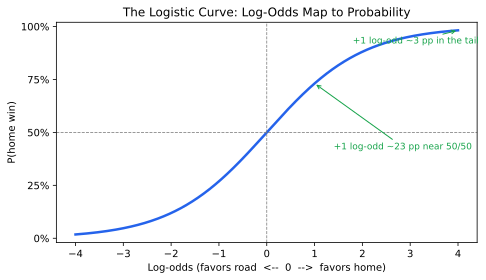
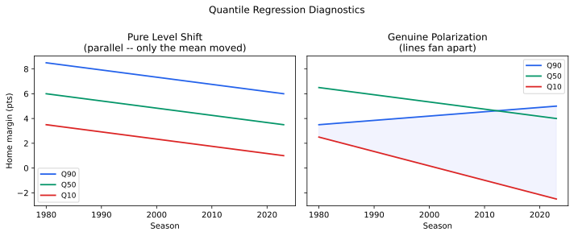
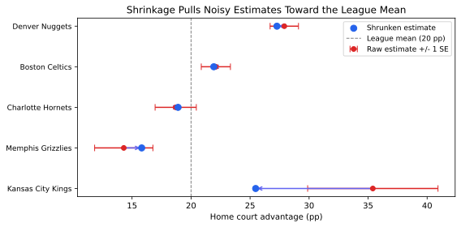
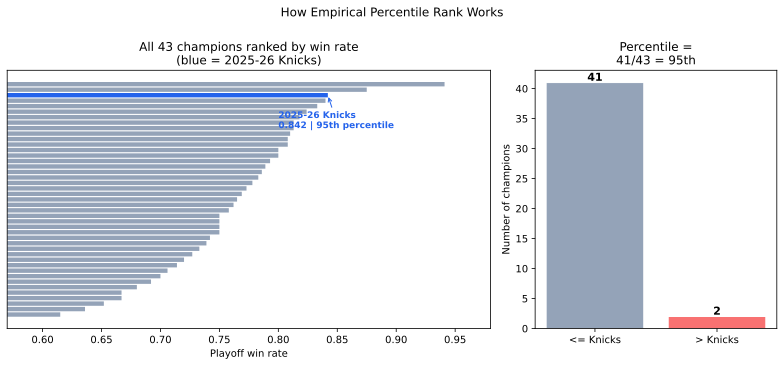
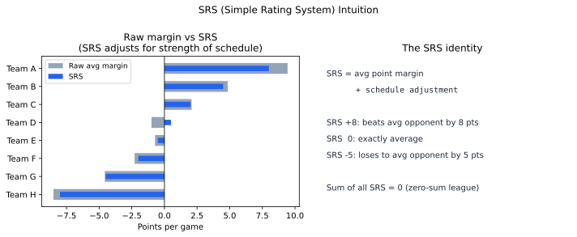

Statistics Tutorial: Reading the NBA Analyses
A teaching companion to the *_results.md files in this project. The goal: if you’ve taken one or two statistics courses but wouldn’t call yourself an expert, this should let you understand every number in the results files: what it is, why we used it, and how to read it without being fooled.
It’s organized by method, not by section, because the same handful of tools show up over and over. Learn logistic regression once and you’ve unlocked ten sections of the home-court results. Where it helps, each method is illustrated with actual numbers from this project; many worked examples reproduce a row of the results doc exactly so you can check the arithmetic yourself.
See the Appendix for the three analyses this tutorial covers and their companion docs.
How to use this tutorial
Each method follows the same template:
The question it answers → The intuition → The mechanics (lightly) → A worked example from our data → How to read it in the results doc → The trap it avoids
You do not have to read in order, but Part 0 (Foundations) underlies everything else, so start there.
Contents
- Part 0, Foundations: probability vs. odds vs. log-odds; percentage points; p-values, confidence intervals, and significance stars; statistical vs. practical significance; frequentist vs. Bayesian inference.
- Part 1, Describing and comparing groups: fitting a trend line (OLS); two-proportion z-test; chi-square test; Pearson vs. Spearman correlation; state-space forecasting.
- Part 2, Modeling a yes/no outcome: logistic regression; turning log-odds into percentage points; binomial GLM; the linear probability model; McFadden pseudo-R².
- Part 3, Getting the uncertainty right: why naive standard errors lie; cluster-robust SEs; HAC/Newey-West SEs; multiple comparisons and Benjamini-Hochberg.
- Part 4, Comparing models and splitting up credit: the likelihood-ratio test; sequential delta-R² vs. Shapley; the mediation accounting identities; the shift-share decomposition; a non-parametric (gradient boosting + SHAP) cross-check; sensitivity to an unmeasured confounder.
- Part 5, Looking beyond the average: quantile regression and polarization.
- Part 6, Ranking noisy things fairly: variance decomposition, empirical-Bayes shrinkage, and split-half reliability.
- Part 7, Avoiding the classic traps: confounders and controls; spurious correlation from shared trends (and how detrending fixes it); reverse causality and the leave-one-out trick; interaction terms; detecting structural breaks; CUSUM stability; interrupted time series and placebo tests; unit roots and cointegration; Granger causality; natural experiments; Bayesian change-point models.
- Part 8, Ranking a single team historically: empirical percentile rank; SRS (Simple Rating System); schedule- and era-adjusted margin; a binomial test against the betting market.
- Part 9, Combining and comparing rating systems: z-score standardization and the consensus rating; ridge regression on thin, collinear data; ridge as Bayesian MAP (the bridge to RAPM and DARKO); the Gini coefficient and when it lies; power laws and the log-log fit.
Part 0: Foundations
0.1 Probability, odds, and log-odds
Almost every model in this project predicts one thing: did the home team win? That’s a yes/no (1/0) outcome. Three different ways of expressing “how likely” show up in the results, and you need all three.
- Probability is the everyday one: the home team wins 60.1% of regular-season games, so p = 0.601.
- Odds = p / (1 - p). At p = 0.601 the odds are 0.601 / 0.399 = 1.51, “about 1.5 to 1 in favor.” Odds run from 0 to infinity, with 1.0 meaning a coin flip.
- Log-odds (also called the logit) = the natural log of the odds: ln(1.51) = +0.410. Log-odds run from -inf to +inf, with 0 meaning a coin flip, positive favoring the home team, negative favoring the road team.
Why bother with the awkward log-odds scale? Because it’s symmetric and unbounded, which makes it the natural scale for regression. A model can add and subtract log-odds freely without ever producing an impossible probability like 1.2 or -0.3. The cost is that log-odds aren’t intuitive, which is why we always translate them back to percentage points (see §2.2).
probability 0% ......... 50% ......... 100%
odds 0 ......... 1.0 ......... inf
log-odds -inf ........ 0 .......... +inf <- the modeling scaleWhen the results doc says a coefficient (the number the model multiplies a factor by, here the change it produces per one-unit step) is “+0.065 log-odds per day” of rest and then “~+1.6 pp,” it computed the log-odds first and translated to percentage points for you. §2.2 shows exactly how.
0.2 Percentage points (pp) vs. percent
A small but constant source of confusion. If the home win rate falls from 65% to 55%, that is a drop of 10 percentage points (pp), not 10%. (As a percent of 65 it’s about a 15% relative drop.) This project always speaks in percentage points to avoid the ambiguity. “-0.244 pp/yr” means the home win rate loses about a quarter of a percentage point each year. Over 43 seasons that’s ~-10 pp, from ~65% down to ~55%.
0.3 p-values, confidence intervals, and those * ** *** stars
Every result carries a measure of “could this just be luck?”
A p-value answers: if there were truly no effect, how often would random chance alone produce a result at least this extreme? Small p = “chance is an unlikely explanation.” The conventional thresholds, shown as stars in the tables:
stars p-value rough meaning *< 0.05 unlikely to be pure chance **< 0.01 quite unlikely ***< 0.001 extremely unlikely (none) >= 0.05 can’t rule out chance A confidence interval (CI) is usually more informative than the p-value. A “95% CI” is a range that would contain the true value 95% of the time if we repeated the study. When the results doc reports the regular-season decline as -0.244 pp/yr, 95% CI [-0.280, -0.209], it’s saying: the true slope is almost certainly somewhere in that narrow band, and the whole band is negative, so the decline is real. A 95% CI that excludes 0 is equivalent to p < 0.05 (for the same test, a few results here report a CI and a p-value computed by different machinery, e.g. a binomial GLM or an LR test, where the two can disagree slightly), but the CI also tells you the size and precision of the effect, which a lone p-value hides.
Read CIs first. “Significant” with a CI of [+0.5, +20] is a barely-detected, wildly-uncertain effect; “significant” with [+8.0, +8.4] is a precisely-pinned one. Same star count, very different findings.
0.4 Statistical significance vs. practical importance
With 49,107 games, this project can detect effects far too small to matter. The travel-distance result (§ Travel in the results doc) is the textbook case: p = 0.010 (a *), but the effect is -0.07 pp per 100 miles, a brutal 2,500-mile cross-country trip costs the visitor under 2 pp, and the win-rate buckets don’t even fall in order. The lesson appears repeatedly here: with huge samples, significance is cheap; always check the effect size. Conversely, a big effect with a fat CI (most single-era playoff numbers) may be real but unproven: the sample is just too small.
0.5 Frequentist and Bayesian: two ways to talk about uncertainty
Almost every number in this project is frequentist: the p-values, confidence intervals, and significance stars from §0.3 all come from one worldview. The change-point analysis (§7.12) switches to the Bayesian worldview, and the two answer different questions. Knowing which one you are reading keeps you from overclaiming.
The two questions. A frequentist treats the true effect as a fixed unknown and asks about the data: “if there were no effect, how often would a result at least this extreme show up by chance?” That is the p-value. A Bayesian treats the data as fixed and asks about the hypothesis: “given what we observed, how probable is each possible answer?” That is a posterior probability. The frequentist never puts a probability on the hypothesis itself; the Bayesian does.
The trap this prevents. The two kinds of interval look identical on the page and mean different things, and the mix-up is the single most common error in this tutorial’s audience. A 95% confidence interval does not mean “95% chance the true value is in here.” It means the recipe that built it traps the true value 95% of the time across many repeated studies; for your one interval, the true value is either inside it or not. A 95% credible interval (the Bayesian version, called an HPD interval when it is the narrowest such band) does carry the everyday reading: given the data and the model, there is a 95% probability the value sits inside it. Same picture, different license to speak.
One quantity, both treatments. The break year in the regular-season decline gets all three objects, so the contrast is concrete:
| object | section | what it lets you say |
|---|---|---|
| QLR (Quandt Likelihood Ratio) p-value | §7.5 | “a break this strong is unlikely if the slope never changed” |
| bootstrap CI 1993–2002 | §7.5 | a frequentist range (from re-running the fit on resampled data) for where the break sits |
| posterior + HPD 1992–2003 | §7.12 | “given the data, the break most probably sits in here” |
All three point at the same late-1990s bend, but only the last one licenses “most probably 1999.”
Why the project is mostly frequentist. The frequentist tools need no prior assumption and are the default language of the field, so they carry the bulk of the analysis. Bayesian methods earn their keep in exactly one place: model comparison. “How many breaks does the decline have, none, one, two, or three?” is a question about which model is most probable, and a posterior over models answers it cleanly (§7.12). The switch is practical, not philosophical.
Part 1: Describing and comparing groups
1.1 Fitting a trend line (Ordinary Least Squares, “OLS”)
The question: is something drifting up or down over time, and how fast?
The intuition. OLS draws the single straight line that comes closest to all the points, where “closest” means it minimizes the sum of the squared vertical distances from points to line. (Squaring punishes big misses and makes the math clean.) The line’s slope is the headline: how much the y value changes for each one-unit step in x.
A worked example. Take one dot per season, the home win %, and fit a line against the year. That’s the regular-season decline: a slope of -0.250 pp per year (the OLS line in the results doc’s decline section). The home_court_advantage_season.svg figure is this line drawn through the season dots.

R²: how tight is the fit? Alongside the slope you’ll see R² = 0.745. R² (“R-squared”) is the share of the up-and-down variation in the points that the line explains, from 0 (line tells you nothing) to 1 (points sit exactly on the line). 0.74 means year alone accounts for nearly three-quarters of why some seasons have higher HCA than others, a strong, clean trend. Contrast the playoffs: same kind of line, but R² = 0.20, because each playoff season is only ~80 games, so the dots scatter much more around the trend.
How to read it in the results doc: look for “Trend/yr” rows and “slope” / “pp/yr” language. The stars next to a slope test the hypothesis “the true slope is zero (flat).”
The trap it avoids, and one it can fall into. A trend line summarizes direction honestly, but plain OLS assumes the points are independent. Season win rates are not independent (a high-HCA season tends to follow a high-HCA season), which makes naive OLS error bars too optimistic. The fix is HAC standard errors, see §3.3.
1.2 The two-proportion z-test
The question: two groups each have a yes/no rate (here, a home win %). Is the gap between them more than chance?
The intuition. Each observed rate is a little fuzzy because it’s based on a finite number of games. The z-test asks whether the gap between the two rates is large relative to that fuzziness. Big gap + lots of games = confident the difference is real.
The mechanics (lightly). Pool the two groups to estimate a common rate p_pool, compute the standard error of the difference (how far that gap would typically bounce from one sample to the next), and form
p1 - p2
z = ──────────────────────────── , p-value from the normal curve
sqrt[ p_pool*(1-p_pool)*(1/n1 + 1/n2) ]A worked example: reproducing a the results doc row. The era analysis compares the first two regular-season eras: 1984-94 at 64.9% (n = 11,275) vs. 1995-01 at 59.9% (n = 7,777).
- Pooled rate: p_pool = (0.64911275 + 0.5997777) / 19052 = 0.629
- SE = sqrt[0.6290.371(1/11275 + 1/7777)] = 0.0071
- z = (0.649 - 0.599) / 0.0071 = +7.0
the results doc reports z = +6.95, p < 0.001 **** for that boundary (the tiny difference is rounding the displayed percentages). A z of ~7 is enormous. This -4.9 pp drop at the 1994-95 hand-checking rule change is rock solid.
How to read it in the results doc: the “Consecutive eras, two-proportion z-tests” and “format period” blocks. Each line is one boundary.
The trap it avoids… and the bigger trap it doesn’t. The z-test cleanly tells you two rates differ. It does not tell you the rule change caused the drop, because HCA was sliding the whole time anyway, any later period looks lower. Separating “these two periods differ” from “the boundary itself did something” needs the LR test in §4.1. This distinction is the spine of the whole project; keep it in mind.
1.3 The chi-square test
The question: across several categories, are the yes/no rates all the same, or do they differ somewhere?
The intuition. The z-test compares two groups; chi-square generalizes to many at once. It compares the counts you actually observed to the counts you’d expect if every category had the identical rate. The bigger the total mismatch, the bigger the chi-square statistic, the smaller the p-value.
The mechanics (lightly). chi-sq = sum (observed - expected)^2 / expected, summed over every cell of the table. It’s tested against the chi-square distribution with “degrees of freedom” = (number of categories - 1) for a simple rate comparison.
A worked example. The rest-bucket analysis splits regular-season games into three buckets, away more rested (57.6% home wins), equal rest (59.3%), home more rested (62.8%), and asks “are these three really different?” Result: chi-sq(2) = 79.2, p < 0.001. The “(2)” is the degrees of freedom (3 buckets - 1). A chi-sq of 78 on 2 df is far out in the tail: rest clearly shifts the home win rate.
The playoff series-structure section uses the same test across the seven game numbers G1-G7: chi-sq(6) = 84.5, p < 0.001: home win % is emphatically not uniform across game numbers (it swings from 55% to 75% depending on which arena hosts).
The trap it avoids. Running a separate z-test for every pair of categories inflates your chance of a false positive (see §3.4). Chi-square asks the single honest question “is there any difference among these groups?” in one test.
Its limit: chi-square tells you a difference exists somewhere; it doesn’t tell you where or which direction. That’s why the results doc pairs it with the bucket table (to see the pattern) and, for series games, notes the pattern is venue alternation rather than a trend.
1.4 Correlation: Pearson vs. Spearman
The question: do two measured quantities move together?
The intuition. A correlation coefficient runs from -1 to +1. +1 = perfect lockstep, -1 = perfect opposition, 0 = no linear relationship. It’s a unitless summary of “as one goes up, does the other?”
The two flavors, and why both are reported:
- Pearson r measures linear association, how close the dots sit to a straight line. Sensitive to outliers and assumes the relationship is roughly straight.
- Spearman rho does the same thing on the ranks of the data instead of the raw values. It catches any monotonic relationship (consistently up-together, even if curved) and shrugs off outliers. When Pearson and Spearman agree, the relationship is robust; when they diverge, an outlier or a curve is doing the work.
A worked example. Season 3-point rate vs. season home win %: Pearson r = -0.902, Spearman rho = -0.890 (both p < 0.001). Nearly identical and both near -0.9, a very strong, very robust “more threes, less home advantage” pattern at the season level. Compare the franchise-consistency section, where raw Pearson = +0.362 (p = 0.042) but Spearman = +0.275 (p = 0.128): they disagree, so the relationship is fragile and shouldn’t be leaned on.
The trap it avoids, but also sets. Reporting both guards against being fooled by an outlier or a curve. But correlation has its own famous trap: two things that both drift over time will correlate even if unrelated (ice cream sales and drownings both rise in summer). The r = -0.90 for threes is partly that trap: detrend both series against the year and it falls to -0.53 (still p < 0.001), so roughly 40% of the raw number is the shared 40-year drift while a genuine year-to-year link survives. Separating the two is exactly what §7.2 (detrending) and the within-era logit in §2.1 are for. Correlation alone is never the end of the story in this project.
1.5 State-space forecasting: a trend line whose slope can drift
The question: if the current rate of decline simply continues, where is home court likely to sit a few seasons from now, and how sure can we be?
Why OLS (§1.1) is the wrong tool here. A single straight line fits one slope to all 43 seasons. But the decline bent in the late 1990s (§7.5, §7.12): the early years fell fast, the later years gently. Project that one averaged slope forward and you overstate today’s rate, and a plain OLS forecast band either holds a constant width or ignores how fast confidence decays the farther out you reach.
The intuition. A state-space model, here the local-linear-trend form, treats the true home win % as a hidden level you never see directly; the season figure you record is that level plus measurement noise. The level drifts each year by a slope, and the slope itself is allowed to wander. The model estimates both from the data with the Kalman filter (a forward sweep that updates its best guess of the hidden level as each new season lands) and the Kalman smoother (a backward sweep that refines those guesses with hindsight). To forecast, it lets the latest level and slope drift forward; because every future step adds fresh noise, the prediction interval (the “fan”) widens with the horizon.
The mechanics (lightly). Two equations: an observation equation (observed % = level + noise) and a state equation (next level = level + slope + noise, next slope = slope + noise). Fit by maximum likelihood (the parameter values that make the observed data most probable); forecast by iterating the state equation forward.
A worked example. Regular season: the smoothed current level is 54.9% (a denoised read of where the series sits now, not the raw last season), sliding about -0.3 pp/yr. Projected to 2031, the central path is 53.5%, 95% interval [48.4%, 58.6%]. Playoffs start higher (smoothed level 58.8%) but the fan is far wider: by 2031 the central path is 57.1% with a 95% interval of [44.9%, 69.3%], because each postseason rests on only ~80 games.
How to read it in the results doc. The state-space forecast block (“Where is home court heading?”): the “current smoothed level” line, then a forecast and 95% interval per future season. Read the fan, not the central line; the widening band is the honest part.
The trap it avoids. A naive “extend the trend line” forecast hides two errors: it uses a slope averaged over the steep early decline (too pessimistic about today’s rate), and it under-reports uncertainty. The state-space fan fixes both. One caveat the model can’t escape: it is a what-if on the current slope, not a prediction about future rule changes. Its value is narrow but real: even the upper edge of the regular-season fan stays below where home court sat in the mid-1980s.
Part 2: Modeling a yes/no outcome
2.1 Logistic regression (the workhorse)
The question: how does the chance of the home team winning depend on one or more factors (rest, altitude, era, …)?
Why not just fit a straight line to win/loss? A straight line through 0/1 outcomes will happily predict a 130% or a -20% win probability for extreme inputs, which is nonsense. Logistic regression fixes this by modeling the log-odds (§0.1) as a straight line, then bending it back into a valid 0-1 probability with the S-shaped logistic curve. Predictions can never escape [0, 1].
P(home win)
1 | ........
| ......
0.5 | ...... <- steepest near 50/50
| ......
0 |......
-------------------------------------------------
favors road <-- log-odds --> favors home
The green arrows make the key quirk visible: the same +1 step in log-odds is worth ~23 pp near a 50/50 game but only ~5 pp out in the tail. That’s why coefficients get translated to percentage points at the average win rate (§2.2): the pp value of a log-odds effect depends on where on the curve you are.
Reading a coefficient. Each coefficient is the change in log-odds for a one-unit change in that factor, holding the others fixed. Sign is what you read first: positive = helps the home team, negative = hurts. The raw size is on the log-odds scale, so the code also gives you the percentage-point translation (§2.2).
“Bivariate” vs. “controlling for…”. A bivariate logistic uses one predictor alone (“does rest matter at all?”). Adding more predictors lets you ask “does this factor matter holding the others constant?” The single most important move in the whole project is “controlling for era”: running home_win ~ 3PA_rate alone gives -2.64 pp per 10 pp of threes, but adding + C(era), comparing only games within the same era, barely changes it (-2.27 pp). That tells you the 3PA effect isn’t just the shared time trend; it holds game-to-game even inside a fixed era. (More on this logic in §7.2.)
C(era) and “dummy variables.” A category like era can’t go into a regression as a number. Instead each era becomes its own 0/1 (“dummy”) column, measured against a left-out reference era (here 1984-94). So “era: 2023-26 = -0.375 log-odds (~-9.0 pp)” means: relative to 1984-94, the 2023-26 era sits 9.0 pp lower, after the other factors are accounted for.
How to read it in the results doc: any block with “log-odds” and “~pp” columns. Read sign -> significance (stars/CI) -> the pp translation for size.
2.2 Turning log-odds into percentage points
This one formula demystifies half the tables. A log-odds coefficient is converted to an approximate effect in percentage points using the slope of the logistic curve at the average win rate p_avg:
pp ~ coef * p_avg * (1 - p_avg) * 100The p_avg*(1-p_avg) factor is the curve’s steepness: effects translate to the most percentage points near a 50/50 race and get squeezed near 0% or 100%.
Worked example (reproduces a row exactly). Regular-season p_avg = 0.601, so p_avg*(1-p_avg) = 0.240. The rest coefficient is +0.065 log-odds per day:
0.065 * 0.240 * 100 ~ +1.6 pp per dayThat is exactly the “~+1.6 pp” you see next to it. Now you can sanity-check any log-odds-to-pp conversion in the file yourself.
2.3 The binomial GLM
The question: same as the trend line, is the season-by-season decline real, but done with the statistically correct model for proportions.
The intuition. Instead of treating each season’s win percentage as a plain number and drawing an OLS line through it, the binomial GLM models the underlying (wins out of games) counts directly. Two automatic benefits: (1) seasons with more games get more weight (a 1,230-game season should count more than a shortened one), and (2) the math knows that a proportion’s variability depends on the proportion itself (a rate near 50% is noisier than one near 95%). “GLM” = generalized linear model; the binomial version is logistic regression’s season-aggregated cousin.
Why it’s run alongside OLS. The decline section reports both the binomial GLM (-0.244 pp/yr) and the OLS/HAC line (-0.250 pp/yr). They land in essentially the same place. That agreement is the point: when the rigorous model and the familiar straight line agree, the finding doesn’t hinge on a modeling choice. This “two methods, same answer” pattern is a credibility move you’ll see throughout.
2.4 The linear probability model (LPM)
The question: when you need contributions that add up exactly, how do you model a 0/1 outcome?
The intuition. The LPM is the “wrong” model done deliberately: plain OLS with the 0/1 win as the y. Its known flaw, it can predict probabilities outside [0, 1], genuinely doesn’t matter when you don’t care about individual predictions. What you gain is additivity: the coefficients combine by simple addition, so you can split the home edge into channel-by-channel pieces that sum to the exact total. A logistic model’s S-curve is nonlinear and cannot give you that clean sum. (See §4.3, the mediation decomposition, for the payoff.)
How to read it in the results doc: the mediation section. When you see contributions that total to “100% of the level” and “95% of the trend,” an LPM made that exact bookkeeping possible.
2.5 McFadden’s pseudo-R²
The question: how much does a logistic model explain, the logit’s answer to “R²”?
The catch you must internalize. Ordinary R² (§1.1) doesn’t exist for logistic regression, so we use McFadden’s pseudo-R² = 1 - (model log-likelihood / empty model log-likelihood). Critically, its numbers are nowhere near linear R². A McFadden R² of 0.05 can represent a strong, important model. In the results doc you’ll see values like 0.0029 or 0.0673. Those are not “the model explains 0.3% of anything” in the everyday sense.
The rule: never read a McFadden value as an absolute percentage. Only read it in relative terms: “block A adds twice the delta-R² of block B.” The sequential decomposition (§4.2) uses exactly these relative comparisons and never quotes the raw level as if it were ordinary R².
Part 3: Getting the uncertainty right
The point estimates (slopes, win rates) are often the easy part. Half of careful statistics is computing honest error bars. Three situations in this project break the textbook assumptions, and each has a fix.
3.1 Why naive standard errors lie
Standard error formulas assume every observation is an independent draw. When observations are secretly related, the formula thinks you have more independent information than you really do, so it reports error bars that are too narrow and p-values that are too small: you get false confidence. The next two methods patch the two ways independence breaks here.
3.2 Cluster-robust standard errors (clustering on season)
The problem. In a game-level model pooling 47,000 games across 43 seasons, games within the same season share that season’s league-wide conditions (the rules, the ball, the officiating climate). They’re not 47,000 independent facts; they’re more like 43 seasons’ worth of correlated games. Treat them as fully independent and your error bars shrink too far.
The fix. Cluster-robust standard errors group the games into clusters, here, one cluster per season-year, and compute uncertainty between clusters rather than pretending every game is its own island. The point estimate doesn’t change; the error bars get appropriately wider and the p-values more honest.
How to read it in the results doc: wherever a game-level model says “cluster-robust SEs by season” (the mediation, decomposition, travel, 3PA, and pace sections). You don’t do anything differently: just know the CIs already account for the fact that seasons, not games, are the truly independent unit.
3.3 HAC (Newey-West) standard errors
The problem (time-series version). Season-level series are autocorrelated: a high-HCA season tends to be followed by another high-HCA season. Consecutive points carry overlapping information, so, again, naive OLS error bars are too tight.
The fix. HAC (“heteroskedasticity- and autocorrelation-consistent”), a.k.a. Newey-West, standard errors widen the error bars to account for that year-to-year carryover. The “maxlags = 1” you see means it corrects for correlation between a season and the one immediately adjacent.
How to read it in the results doc: the decline section’s “OLS / HAC” line. The slope is the same line you’d draw by eye; the inference (its CI and p-value) has been made robust to the fact that seasons aren’t independent. It’s the time-series sibling of clustering (§3.2): both stop you from over-trusting correlated data.
3.4 Multiple comparisons and Benjamini-Hochberg
The problem. Run one test at p < 0.05 and there’s a 5% false-alarm rate. Run 47 tests, one per playoff referee, and you’d expect about two to clear p < 0.05 by pure luck, even if no referee were biased at all. Naively counting “significant” referees over-counts.
The fix. The Benjamini-Hochberg (BH) procedure controls the false discovery rate: it adjusts the threshold so that, among the tests you call significant, only ~5% are expected to be false alarms. It’s less brutal than the old Bonferroni “divide by the number of tests” rule, which keeps useful statistical power (the chance a test detects a real effect when one truly exists) when you have real effects.
Why it’s the punchline of the referee section, not a footnote. A raw leaderboard of 47 noisy referee means will manufacture a “most biased ref” headline. BH is what lets the results doc say something trustworthy: 29 of 47 officials are individually significant, and all 29 survive BH correction. That “survives correction” is the signature of a real, widespread effect rather than a few lucky draws, exactly the universal (not a-few-bad-apples) home-foul bias the analysis concludes.
Part 4: Comparing models and splitting up credit
4.1 The likelihood-ratio (LR) test
The question: does adding a block of variables (all the era dummies, all the format-period dummies) genuinely improve the model, or are they just decoration?
The intuition. Fit two nested models: a small one (home_win ~ year) and a bigger one that adds the block (home_win ~ year + C(era)). The bigger model will always fit the data at least slightly better: more knobs always help a little. The LR test asks whether it fits enough better to justify the extra knobs, or just the amount you’d expect from random wiggle room.
The mechanics (lightly). The statistic is 2*(log-likelihood difference), compared against a chi-square distribution with df = number of variables added. A small p-value = “the block earns its place.”
The worked example that defines the project. This is the formal version of the §1.2 caution. The era section asks: beyond the smooth year-by-year drift, did specific rule-change eras cause extra jumps?
- Regular season: LR test chi-sq(5) = 20.68, p < 0.001 -> the era dummies do add real explanatory power. There’s a genuine discrete drop (at 1994-95) on top of the smooth slide.
- Playoffs: LR test chi-sq(5) = 2.24, p = 0.815 -> the era dummies add nothing. The playoff decline is a pure smooth drift with no rule-change fingerprints.
Same logic exonerates the 2014 playoff format change: the raw z-test showed a scary -6.8 pp drop at 2014, but once the year trend is in the model the LR test for the format dummies is p = 0.197: the “drop” is just the steady decline passing through that year, not the schedule change doing anything.
The trap it avoids. It separates “this period is lower” (a raw difference, which the ever-present downward trend guarantees) from “this boundary itself moved the needle.” That distinction is the spine of the project: it recurs in the era, format, and (implicitly) the decomposition sections.
4.2 Splitting up R²: sequential vs. Shapley
The question: five factors jointly explain the regular-season decline. How much credit does each deserve?
The naive way (sequential), and its flaw. Add factors one at a time and record how much each new one bumps the (pseudo-)R². The problem: whoever goes first hogs the shared credit. Era and altitude both partly track the same teams; if era is entered first, it absorbs the overlap and looks bigger than it should.
In the results doc, era entered first gets a 57.9% sequential share.
The fair way (Shapley). Borrowed from game theory, the Shapley value asks: average each factor’s contribution over every possible order of entry (all 2^5 = 32 subset models). No factor gets the artificial first-mover bonus; shared credit is split evenly. Era’s honest Shapley share drops to 52.6%, still half the story, but the inflation from going first is removed.
How to read it in the results doc: the decomposition section lists both columns side by side precisely so you can see how much the ordering mattered (here, era was modestly inflated; altitude and rest barely moved). When they’re close, ordering didn’t matter and you can trust either; when they diverge, trust Shapley.
The takeaway it supports. Era (the structural decline) ~53%, situational factors (rest, altitude, time zone, COVID) ~47%. And since none of those situational factors changed over time (§7 and the stability tests), they explain which games are won, not why HCA fell. Half the explanatory power belongs to the era structure itself.
4.3 Mediation: the level and trend accounting identities
The question: the home edge shows up in the box score as better shooting, fewer fouls called, fewer turnovers, more rebounds. How much of the home edge, and of its decline, flows through each of those four channels?
Why it needs the LPM (§2.4). Because the answer is an exact decomposition: the channel contributions must sum to the totals. Only a linear model (additivity) makes that possible. Two identities do the work:
Level identity: split the home edge (the 10.1 pp above a coin flip) into channels:
mean win % = intercept + sum( coef * mean channel difference )Each channel’s contribution = how much the home team is ahead on that channel (mean diff) times how much a unit of it is worth (coef). For the regular season:
| channel | contribution | share of the +10.1 pp edge |
|---|---|---|
| shooting (eFG%) | +4.4 pp | 43% |
| rebounds | +2.5 pp | 25% |
| fouls (carries free throws) | +1.4 pp | 14% |
| turnovers | +1.3 pp | 13% |
| unexplained | +0.5 pp | 5% |
The four measurable channels reconstruct 95% of the home edge.
Trend identity: split the decline the same way, using each channel’s own year-trend:
total pp/yr = unmediated pp/yr + sum( coef * channel's trend per year )Worked check (reproduces a row). Shooting is worth +3.42 pp per pp of eFG% edge, and that eFG% edge is shrinking at -0.0151 pp/yr. Multiply: 3.42 * (-0.0151) ~ -0.0516 pp/yr, exactly the shooting channel’s reported contribution to the decline. Sum all four channels and you recover 96% of the regular-season -0.244 pp/yr slide; only 4% is “unmediated.”
The honesty label you must respect. the results doc calls these channels proximate and the level/trend split an accounting decomposition, not causation. A 27% “share” tells you where the change shows up in the box score, not why it happened, and on its own it can’t tell you whether two channels are independent stories or both downstream of one deeper cause. A decomposition just hands each channel its slice; you need a further test to probe what’s behind it.
Going one step further: the 3PA-control diagnostic. The obvious worry: maybe the rebounding and turnover slices are really just the three-point revolution wearing different hats. The section now tests this head-on. For each channel it refits the channel’s year-trend twice, channel ~ year and channel ~ year + 3PA rate, and reports how much of the trend the 3PA control absorbs. (It uses game-to-game 3PA variation within a season, which gives the control real bite; season averages alone would be nearly interchangeable with the calendar.)
The logic is asymmetric, and it’s worth understanding why. A trend that survives the control is strong evidence of an independent driver: it slid for reasons threes don’t explain. Heavy absorption is only weak evidence of downstream-ness, because 3PA and the calendar march together (the §7.2 shared-trend trap), so the control can soak up a trend without genuinely explaining it. Trust a survival; treat an absorption gently.
The four channels split three ways:
| channel | 3PA absorbs | verdict |
|---|---|---|
| shooting (eFG%) | ~210% (flips sign) | fully downstream, the fading home shooting edge is the three-point story |
| rebounding | ~8%, still p < 0.001 | independent, a genuine fourth strand of the decline |
| fouls / turnovers | ~51% / ~54% | mixed, partly the perimeter shift, partly their own |
So the earlier “it’s probably all downstream” hunch was half right (turnovers, partly) and half wrong: rebounding stands on its own, and FINDINGS.md now treats it as a separate driver. This is the template for going past a decomposition: when a share is ambiguous, add the suspected common cause as a control and see what survives.
Regular season vs. playoffs. Channels carry 96% of the regular-season decline but only 67% of the playoff decline: 33% of the playoff story runs outside the box score (and folds in seed quality, which §7.1 isolates). The rebounding fade, if anything, is sharper in the playoffs once 3PA is controlled.
Pinning down the uncertainty: bootstrap confidence intervals on the shares. The point shares (43%, 25%, 14%, 13%) are estimates with sampling uncertainty. the results doc reports 95% bootstrap CIs built by resampling whole seasons with replacement 500 times and recomputing the decomposition each time. Resampling whole seasons (rather than individual games) preserves the within-season correlation structure. In the regular season the level shares are tight: the eFG% level share has a CI of [40, 46]%, and the total “channels carry 95% of the level” claim has a band of [91, 97]%. Trend shares are a bit wider (rebounding: [25, 38]%, eFG%: [11, 28]%), but none crosses zero. In the playoffs the trend-share CIs are far wider (eFG% trend: [−28, +38]%), reflecting how noisy 80-game playoff seasons are. The overall playoff headline of 67% mediated has a band of [38, 107]%. Read: the regular-season shares are reliable; the playoff trend shares should be treated as directional, not precise.
Validating the decomposition: out-of-sample forecasting. Fitting a model and testing it on the same data risks overfitting; the model might have memorized historical noise rather than a real mechanism. The out-of-sample forecast in the results doc guards against this by freezing the four-channel LPM on the training seasons (1984–2013) and asking it to predict each held-out season (2014–2026) from that season’s actual box-score edges. The frozen model reaches 0.95 pp RMSE (root mean squared error, roughly the typical size of a season’s forecast miss) on the 13 held-out regular seasons, beating a naive trend extrapolation (1.45 pp) and a flat-mean forecast (5.48 pp). The channel model beats the trend extrapolation because it responds to the actual edges in each season: when foul differentials and rebounding gaps compressed in 2020–22, the frozen coefficients correctly predicted lower home win rates. A model that had just memorized the trend would miss those season-to-season moves. The out-of-sample win is the cleanest evidence that the mechanism in the decomposition is real and stable, not a product of fitting all 43 seasons simultaneously.
4.5 A non-parametric cross-check: gradient boosting and SHAP
The question: the mediation in §4.3 split the home edge into four channels with a linear model (the LPM). Does that split hold up if we drop the straight-line assumption and let the channels bend and interact?
The intuition. A gradient-boosted tree model predicts home wins from the four box-score edges (eFG%, fouls, turnovers, rebounds) by stacking hundreds of small decision trees, each one correcting the errors of the trees before it. It assumes no straight lines and captures interactions a linear model can’t (a rebounding edge might count for more on a night the shooting is even). The price is that the result is a black box: there is no coefficient to read off. SHAP values (SHapley Additive exPlanations) open it up. For each game, SHAP divides the model’s predicted win probability into one additive piece per channel, and those pieces sum exactly to the prediction. Average the per-game pieces within an era and they sum to that era’s gap from the league-wide home win rate; take the early-minus-late difference per channel and you have each channel’s contribution to the decline, the same quantity §4.3 computed linearly, now with no linearity assumed.
SHAP is not Shapley (§4.2): keep them straight. Both descend from the game-theory Shapley value, fair credit averaged over every order of entry. But §4.2’s Shapley splits a model’s R² across blocks of predictors; SHAP applies the same fairness idea one game at a time to split a tree model’s prediction across features. Same lineage, different target.
A worked example. Regular season, model accuracy 0.93. The SHAP decline decomposition (early 1984–94 minus late 2023–26) gives shooting +3.3 pp (35%, the top channel), rebounding +2.6 pp (28%), turnovers +2.2 pp (23%), and fouls the smallest at +1.4 pp (14%). The four sum to 9.4 pp, essentially the actual 9.3 pp decline. The linear mediation (§4.3) makes the same four-way split: shooting, rebounding, and turnovers each carry a large slice and fouls clearly the smallest. The two methods disagree on which of the big three leads, so read the grouping, not the exact order. Because the two methods share no assumptions, their agreement says the breakdown is a feature of the games, not of the straight-line form. (The playoffs split the same way: shooting and rebounding largest, fouls and turnovers smaller.)
How to read it in the results doc. The non-parametric channel decomposition block (gradient boosting + SHAP): per-channel “Contribution” and “% of decline” columns, and the closing line that checks the SHAP total against the actual decline.
The trap it avoids. An exact linear decomposition is seductive precisely because it balances to the penny, but that tidiness could be an artifact of forcing straight lines onto a curved reality. Re-deriving the same split from a flexible model that was free to bend is what rules that out.
4.6 Sensitivity to an unmeasured confounder: the robustness value
The question: §4.3 is careful to call its channel shares an accounting split, not proof of cause. The worry it names is a hidden confounder: something the box score never recorded that drives both a channel and winning, inflating that channel’s apparent role. How strong would such a hidden cause have to be to overturn a channel’s link to winning?
The intuition. You cannot measure what you never recorded, but you can ask how strong an omitted cause would need to be to matter. The robustness value (RV) (Cinelli & Hazlett, 2020) is that threshold: the minimum share of the leftover (residual) variation in both the channel and home wins that a single unmeasured confounder would have to explain to drag the channel’s coefficient all the way to zero. A high RV means you would need an implausibly strong hidden cause, so the link is hard to explain away. This is the formal partner to §7.1: there you add a confounder you measured (quality_diff) and check whether the effect survives; here you bound the damage a confounder you never measured could do.
The mechanics (lightly). Each channel’s partial R² with home_win, how much of the outcome’s residual variation that channel alone accounts for, feeds a closed-form expression for the RV. The partial R² doubles as the benchmark: to zero a channel out, a confounder must explain more of both sides than the channel itself does.
A worked example. Regular season. Shooting has a partial R² of 48.1% and an RV of 60.5%: a confounder would have to explain at least 60.5% of the residual variation in both eFG% and home wins to erase shooting’s link, well above shooting’s own 48% share. Even the most fragile channel clears a high bar: fouls have a partial R² of 10.5% and an RV of 28.9%, so a confounder must still explain ~29% of both. (Turnovers sit at 40.7%, rebounding at 36.8%; the playoff values are nearly identical.) Those are demanding thresholds, so the shooting and foul strands in particular are hard to wish away with one omitted variable.
How to read it in the results doc. The mediation robustness block (sensitivity to unmeasured confounding): a partial R² and a robustness value per channel, with a one-line interpretation. Higher RV = more robust.
The trap it avoids. The lazy moves are to treat an observational decomposition as obviously causal, or to dismiss it because “there could always be a confounder.” The RV replaces the hand-wave with a number you can judge. Its honest limit: a high RV bounds how robust a link is; it does not prove the channel causes home wins.
Part 5: Looking beyond the average
5.1 Quantile regression and “polarization”
The question: is the whole distribution of game margins changing the same way, or are its tails moving differently from its middle?
Why averages aren’t enough. A trend line on the average margin (§1.1) tells you the center is sliding, but it’s blind to the shape. Two very different worlds can share the same falling average: one where every game just gets a bit closer, and one where blowouts in both directions get more common while the average barely moves. You need to watch different parts of the distribution separately.
The intuition. Quantile regression fits a separate trend line through a chosen percentile of the outcome rather than the mean. The Q10 line tracks the 10th percentile (the home team’s worst nights, big losses); Q90 tracks the 90th (its best nights, big wins); Q50 is the median. Each gets its own slope over the years.
The two diagnostic patterns:
If all the quantile lines slide down in parallel: the distribution just
shifted, a pure "level"
change, nothing about
shape changed.
If the bottom (Q10) falls while the top (Q90) rises: the distribution is
spreading apart,
genuine polarization.
The left panel is the hypothetical “boring” outcome, every quantile sliding down in parallel at the median’s rate. The right panel is the actual regular-season data: the Q90 line tilts up while Q10 dives down, so the lines fan apart. That fanning is polarization; parallel lines would have meant nothing about shape changed.
The worked example. Regular-season margins:
| quantile | slope (pts/yr) | meaning |
|---|---|---|
| Q10 | -0.167* | the worst home losses are getting worse |
| Q50 | -0.053*** | median drifting down |
| Q90 | +0.050 | the biggest home wins are getting bigger |
The top rises as the bottom falls. The spread between them (Q90 - Q10) widens by +0.22 pts/yr, confirmed polarization: home blowout wins and home blowout losses are both becoming more common. The home_court_margin.png figure shows this fanning-apart visually.
The trap it avoids: this is the whole reason the section exists. The simpler margin analysis (§ Win Margin in the results doc) split games into “home wins” and “home losses” and found both groups’ margins growing apart. But that split has a built-in artifact: as the home win rate falls, games that used to be narrow home wins flip into narrow home losses, which mechanically pushes the two conditional averages apart even if nothing about the distribution truly changed. Quantile regression looks at the unconditional distribution, it never conditions on who won, so it can’t be fooled by games switching sides. It confirms the polarization is real, not bookkeeping.
Part 6: Ranking noisy things fairly
Two methods that always travel together, used anywhere the results doc ranks a list of noisy averages, the 39 franchises and the 47 referees.
6.1 Variance decomposition (method of moments)
The question, asked before you rank anything: is there even any real spread among these groups, or is the leaderboard entirely luck?
The intuition. The spread you observe across franchises is a mix of two things:
observed variance = true between-group variance + average sampling noiseSampling noise is the wobble you’d see even if every group were truly identical, just because each is measured on a finite number of games, and crucially, you can compute it from the sample sizes. Subtract it from the observed spread and what’s left is an estimate of the true spread.
Two worked examples that reach opposite conclusions:
- Regular-season franchises: observed SD (standard deviation) = 4.9 pp; sampling noise accounts for only 30%; estimated true SD ~4.1 pp. (Check: 4.9^2 = 24.0, 4.1^2 = 16.8, so noise = 7.2 = 30% of 24.0.) Real differences exist: Denver and Utah genuinely have stronger home court (the altitude finding).
- Playoff franchises: observed SD = 8.0 pp, but sampling noise accounts for 101% of it; true SD ~0. The entire playoff leaderboard spread is luck. No franchise has a demonstrably special playoff home court: the samples (20-220 games) are just too small.
The lesson: always ask “is there real spread?” before ranking. If the answer is “no” (playoffs), any ranking is noise dressed up as signal.
6.2 Empirical-Bayes shrinkage
The question: given that small-sample groups land at the extremes by luck, how do you produce a leaderboard you’d actually bet on?
The intuition. Pull each group’s estimate toward the league average, by an amount that depends on how noisy it is. A franchise measured on 1,700 games barely moves; one measured on 82 games gets yanked hard toward the middle, because its extreme value is probably mostly luck. The pull weight is
weight = true variance / (true variance + that group's sampling variance)Reliable (low-noise) estimates keep most of their distinctiveness; noisy ones mostly collapse to the average.
A worked example that reproduces the table exactly. Using the regular-season true variance ~4.1^2 = 16.8 and the league mean +20.0 pp:
- Kansas City Kings: raw +35.4 on just 82 games (sampling SE ~7.2 pp -> sampling var ~51.7). Weight = 16.8 / (16.8 + 51.7) = 0.245, so shrunken = 20.0 + 0.245 * (35.4 - 20.0) = +23.8 pp, pulled down 11.6 points, because that gaudy raw number rests on almost no data. Matches the results doc.
- Denver Nuggets: raw +27.9 on 1,730 games (sampling SE ~1.6 -> var ~2.7). Weight = 16.8 / (16.8 + 2.7) = 0.86, so shrunken = 20.0 + 0.86 * (27.9 - 20.0) = +26.8 pp, barely moves, and stays #1. Matches the results doc.
That’s the whole idea: shrinkage demotes lucky small samples (Kansas City) while leaving well-measured ones (Denver) essentially untouched.

Read the figure as “length of the red arrow = how much we distrust the raw number.” Kansas City’s huge error bar (only 82 games) earns an 11.6 pp pull; Denver’s tight bar (1,730 games) barely moves. The project’s own home_court_team_hca.png shows the same raw-vs-shrunken comparison for all 39 franchises.
And when there’s no true spread (playoffs)? Shrinkage collapses every franchise to the league mean (+26.9 pp), which is the honest answer when the variance decomposition already told you the true spread is zero. Utah’s raw +39.7 and the Clippers’ raw -3.6 are both just +26.9 once you account for their tiny samples.
6.3 Reliability: how much of a single rating is real signal
The question, now about one metric instead of a leaderboard: §6.1 asked whether a list of averages has real spread. Turn it around: hand me one rating, one number per player, and before I rank anyone with it, how much of that number is real and how much is noise?
The intuition. Reliability is the correlation between two independent measurements of the same underlying thing. Measure the same players twice on separate data and correlate the two sets of numbers. A metric that captures something real makes the two measurements agree, so the correlation is high; a metric that is mostly noise makes them scatter, so the correlation sits near zero. Reliability runs from 0 (pure noise) to 1 (a perfect, repeatable measurement).
Reliability is itself the share that is real signal. In classical test theory the reliability coefficient equals the fraction of the observed spread between players that reflects real differences rather than noise, so you read it directly, you do not square it. A reliability of 0.5 means about half of what separates players is real and half is noise; 0.7 means about 70% is real. (The temptation to square comes from regression’s R², the variance one variable explains in another. Reliability is different: it is the correlation between two measurements of the same thing, and that correlation already is the signal-variance share. Squaring it would double-count the noise and understate the metric.)
The rough usability line, about 0.5. Below ~0.5 a single-number rating is dominated by noise and cannot be trusted to rank individuals: re-measure on fresh data and the order reshuffles. Between ~0.5 and ~0.7 a rating becomes genuinely useful, real enough to separate players even with a meaningful chunk of noise left in. This is a rough guide, not a magic threshold. 0.49 and 0.51 are not different worlds; treat the line as “roughly where a ranking starts to mean something.”
Split-half reliability: measuring it without measuring twice. You rarely get to replay a whole season, so you manufacture the two independent measurements by splitting the data you already have. Split-half reliability randomly divides the raw data (for a plus-minus metric, the possessions) into two halves, computes the metric independently on each half, and correlates the two sets of estimates. Real signal makes the halves agree; noise makes them diverge.
A worked example: our RAPM. Split one season of possessions into two random halves, fit the rating on each, and correlate the players’ two estimates: they line up at about r = 0.32. On its own that reads as discouraging, but it understates the metric you actually use, because each half was built on only half the possessions.
Spearman-Brown: correcting for the halving. Because a split-half correlation rests on half the data per estimate, it is pessimistic about the reliability of the metric run on all the data. The Spearman-Brown correction rescales it:
full-data reliability ≈ 2r / (1 + r)For RAPM, r = 0.32 gives 2(0.32) / (1 + 0.32) = 0.64 / 1.32 ≈ 0.48. That lands the full-season rating right at the low edge of the usable band: barely rankable, and only because the correction rescued it from the raw 0.32.
Reliability grows with more data. Reliability is not a fixed property of a metric; it climbs as you feed the estimate more evidence, because more data averages the noise away and lets the real signal take up a larger share. Pooling more seasons of RAPM lifts the full-data reliability from about 0.48 at three pooled seasons to about 0.60 at five. That climb is exactly the ~0.5-to-0.7 span between “barely usable” and “genuinely useful”: the same metric crosses from one to the other just by resting on more possessions.
How to read it, and how it connects to §6.1. A split-half or Spearman-Brown reliability figure tells you whether a leaderboard is worth reading at all, before you look at who is on top. It is the single-metric twin of §6.1: variance decomposition asks “is there real spread among these groups?”, and reliability asks the same question of one rating, “is this number mostly signal?” A reliability near zero is the single-metric version of §6.1’s verdict that a whole leaderboard is luck.
The trap it avoids. A rating can look authoritative, one clean number per player, and still be mostly noise. Print a top-50 list from a metric with reliability 0.3 and you have dressed up a near-coin-flip as a ranking; re-run it on next month’s games and the names would shuffle. Reliability is the check that keeps you from ranking individuals on a number that would not survive being measured again.
Part 7: Avoiding the classic traps
The previous parts were tools. This part is judgment, the recurring ways an analysis of observational sports data fools you, and the move that defuses each. These are where the project earns its conclusions.
7.1 Confounders and controls
The trap. A factor looks important but is really a stand-in for something else. Playoff rest is the case study: teams earn extra rest by sweeping a series, and teams that sweep are better teams. So “well-rested home team wins” might really be “better team wins” wearing a rest costume.
The fix: add a control. Re-run the model with a measure of the confounder included, and see if the suspect effect survives. Here the control is quality_diff = the home team’s regular-season win % minus the away team’s.
The result. Bivariate, playoff rest looks worth +2.4 pp/day (significant). Add quality_diff and rest collapses to +1.6 pp/day, p = 0.113, no longer significant, while quality_diff is overwhelming (+112 pp per unit, p < 0.001, an extrapolated marginal effect across a full 0-to-1 swing in win-% gap, far outside any real matchup, which is why it sails past the 100 pp a probability could actually move). Verdict: most playoff “rest advantage” was just being the better team.
The same move clears the playoff decline of a different suspicion. Maybe the playoff HCA fell only because top seeds stopped dominating? Add quality_diff and the year trend barely flinches (-0.225 -> -0.229 pp/yr; 102% retained). The clincher is a control by design: when the objectively weaker team hosts G3/G4, it still wins 51.5%, a pure venue effect with quality stripped out. The playoff decline is genuine home-court weakening, not seed compression.
7.3 Reverse causality and the leave-one-out trick
The trap. You think X causes Y, but Y is partly causing X. Pace is the example: faster games (more possessions) correlate with home wins, but blowouts manufacture extra possessions (garbage time, intentional fouling, no late-game stalling), and home blowouts are disproportionately home wins. So “more pace -> more home wins” might really be “winning big -> more pace,” the arrow pointing backwards.
The fix: leave-one-out (LOO) “expected pace.” Don’t use a game’s own pace (contaminated by its own outcome). Instead, predict each game’s pace from each team’s pace in all its other games that season, and use that. Built only from other games, expected pace can’t be inflated by this game’s blowout: the backwards arrow is severed.
The result. Realized pace shows a clean, significant +2.3 pp per 10 possessions (p < 0.001). Swap in expected pace and it falls to +1.5 pp and goes non-significant (p = 0.227). That collapse is the tell: the original effect was substantially outcome-driven, not pace driving outcomes. Pace is ruled out as a cause of the decline (and, as STATS_EXPLAINER.md notes, pace is U-shaped over time while HCA fell steadily: they can’t even share a trend).
The lesson: when an outcome can feed back into a predictor, build the predictor from data that excludes that outcome. LOO is a simple, powerful way to do it.
7.4 Interaction terms (did an effect change?)
The question: the home-court decline is real, but the reason matters. Did the known factors (rest, altitude, time zone) get weaker and thereby cause the decline, or did they hold steady while something else fell away?
The intuition. An interaction term asks whether a factor’s effect differs across two regimes, here, before vs. after 2014. You add a factor * post2014 term; if it’s significant, that factor’s effect shifted at 2014. A post2014 main effect, separately, captures an overall level drop common to all games.
The result (the stability test).
| term | estimate | significant? | reading |
|---|---|---|---|
| rest * post2014 | +0.028 | no (p = 0.14) | rest effect unchanged |
| altitude * post2014 | -0.180 | yes (p = 0.026) | altitude effect weakened |
| tz * post2014 | -0.002 | no (p = 0.92) | time-zone effect unchanged |
| post2014 (level) | -0.196 | yes (p < 0.001) | overall -4.7 pp drop |
The picture is clear: the rest and time-zone effects didn’t change, and there’s a large, real, across-the-board -4.7 pp level drop after 2014. (Altitude’s home-court edge did weaken, the lone situational shift, but it touches only two teams and is dwarfed by the level drop.) Home teams kept their rest edge at full strength; they simply started winning less for reasons those factors don’t capture, pointing the search toward the foul-bias and shot-selection channels (the fading mechanisms in the differentials and shot-zone sections). An interaction test is how you ask “did this change?” instead of “does this matter?”
7.5 Detecting structural breaks (when did the change actually happen?)
The question. We know HCA declined over 40 years. But “when did the pace of decline shift?” is a different question from “did it decline?” Splitting at rule-change years (1995, 2002, 2014) is one approach, but it imposes our prior beliefs about which year mattered. A structural break test lets the data answer instead.
The intuition. Fit a single trend line through all 43 seasons of home win %. Now fit two lines: one through the first k seasons, one through the remaining n−k. For the right choice of k, the two-line fit will be much better than one line; for a random k, the improvement is small. Try every candidate k (the outer 15% trimmed to keep the sub-samples large enough to be reliable), measure the improvement at each, take the biggest. That’s the Chow F-statistic, and the year it peaks is the data-implied break.
Chow F(k) = [(one-line RSS − two-line RSS) / 2] / [two-line RSS / (n − 4)]
A large F means two lines fit much better than one at year k.
The catch: you’re doing many tests at once. If you try 33 candidate years and pick the max, standard significance tables are wrong; the p-values are too small (you chose the best of 33 shots). The correct benchmarks are from Andrews (1993), who worked out the distribution of the maximum F across all candidates: 10% → 7.12, 5% → 8.85, 1% → 12.37 (for 15% trimming, 2-parameter models).
Worked example. Regular season, 43 seasons. The single-line OLS: RSS_full = some number. Try every year from 1991 (15% trimmed) to 2019. The supremum Chow F hits 10.22 at 1999, which clears the 5% Andrews threshold (8.85). Before 1999, the RS slope was −0.65 pp/yr (steep); after 1999, −0.25 pp/yr (gradual). The data sees 1999 as the clearest break, not 1995 (the rule-change year) and not 2014. A bootstrap on the break year (500 residual resamples) puts its 95% CI at 1993–2002, so the honest reading is “somewhere in the late 1990s,” not a single pinpointed season.
Playoffs: the supremum is only 3.23 (at 2006), well below even the 10% threshold. No data-implied break; the playoff decline is a smooth drift throughout, consistent with what the era analysis (§4 of the results doc) found.
How to read it in the results doc. The “Supremum Chow F = X.XX at year YYYY” line is the headline. Compare to Andrews critical values (printed above it). The “top 5 candidate break years” table shows where the F was largest: a cluster of nearby years all scoring high means the break was real but gradual; one dominant year means a sharper shift.
Connecting the break to a cause: using two tests together.
This supremum Chow F procedure is the Quandt Likelihood Ratio (QLR) test, which the rest of the tutorial calls the QLR. The QLR answers when the pace of decline shifted. It says nothing about why. To get from “when” to a plausible cause, you need a second test (the LR test for era dummies, §4.1), and you need to be honest about the gap between “this is consistent with cause X” and “this proves cause X.”
Here is the full two-step argument for the 1994–95 rule change:
Step 1: Did a specific boundary produce an extra jump beyond the drift? The LR test compares home_win ~ year + C(era) against home_win ~ year alone. If the era dummies jointly improve the fit, specific rule-change boundaries moved the needle beyond what the year-by-year trend would predict on its own.
Regular season result: LR chi-sq(5) = 20.68, p < 0.001: the boundaries do add something. But which one? Only the 1994–95 era dummy is individually significant (p = 0.010, worth about −2.6 pp beyond the drift). Every other boundary (2002, 2005, 2018, 2023): the model says “the trend passed straight through.” This makes 1994–95 the only candidate season for a discrete shock, not just a part of the ongoing slide.
Step 2: When did the pace of decline actually moderate? That is the QLR finding: the slope shifted in the late 1990s, from a steep −0.65 pp/yr to the gentler −0.26 pp/yr that has continued ever since.
Step 3: Combine the two. These are not contradictory results; they are the same story at two levels:
| Test | What it found | What it means |
|---|---|---|
| LR era test | 1994–95 boundary is the only significant discrete step | That rule change did something extra beyond the drift |
| QLR | Slope shifted in the late 1990s | The rate of decline moderated several seasons after the rule change |
The interpretation: the rule change in 1994–95 triggered an immediate discrete drop. But adjustment takes time: referees retrain, teams rebuild rosters, players learn the new boundaries. That multi-year settling-in process is what the QLR captures: by the end of the decade, the league had reached a new equilibrium and the pace of decline slowed.
Where the inference ends. The QLR can say when the slope shifted; it cannot say what caused the shift. The LR test can say the 1994–95 boundary did something extra; it cannot say what that something was. The combination (“1994–95 is the only significant boundary, and the slope moderated inside that same era”) is what makes the hand-checking crackdown the leading explanation. But a multi-year lag means we cannot rule out that something else in the late 1990s also played a role. Honest statistical practice is to report what the data can establish (the timing evidence points at 1994–95) and what it cannot (the mechanism is a well-supported inference, not a direct measurement).
7.6 CUSUM: is the trend stable everywhere, not just at one break?
The question. The structural break test (§7.5) finds the single year where the decline’s pace shifts most. But what if the trend wobbles in several places, or drifts unstably without a single clear break? CUSUM asks whether the straight-line trend is stable across the whole span, no year named in advance.
The intuition. Fit the linear year-trend, then walk through the seasons accumulating the recursive residuals (how far each new season sits from what the trend-so-far predicted). If the relationship is stable, those wobbles cancel and the running sum stays near zero. If it shifts, the residuals start pulling the same way and the cumulative sum drifts off. CUSUM plots that running sum against a 5% critical band that widens through the sample; stepping outside the band flags instability.
Where it differs from QLR (§7.5). QLR pinpoints the one strongest break; CUSUM tests global stability without naming a year. When the two agree, confidence rises; when they disagree, that gap is itself the finding.
Worked example. Regular season: the CUSUM never leaves the band: it peaks at |CUSUM| = 14.0 in 2019, against a 5% bound of ±16.1 (87% of the way to the edge). The playoffs are calmer still (peak 32% of the boundary).
This seems to contradict §7.5, which found a real regular-season break near 1999, and the contradiction is the lesson. That break is a gradual slope change (−0.65 → −0.25 pp/yr), not a sudden level jump, and CUSUM has low power against slope-only breaks. Read together: the decline bent once, gently, in the late 1990s, and is otherwise a stable straight-line drift with no hidden instability elsewhere.
How to read it in the results doc. The CUSUM section’s “Exceeds 5% critical band: no/yes” line, plus the “Peak |CUSUM| … % of the 5% boundary” figure. Close-but-inside (like 87%) means “almost, but the trend holds.”
The trap it avoids. Relying on a single break test can miss instability that’s spread out rather than concentrated at one year. CUSUM is the global complement, and its disagreements with QLR tell you whether a break is a sharp step or a gentle bend. A third view, the Bayesian change-point model (§7.12), formally reconciles the two by asking how many breaks the series supports and where.
7.7 Interrupted time series: did a known boundary cause a jump or a bend?
The question. We have a specific suspect date: the 1994–95 hand-checking rule change. Did HCA drop the instant the rule took effect (a discrete cliff), did the rate of decline change (a bend), or neither?
The intuition. Where the structural break test (§7.5) hunts for an unknown break, interrupted time series (ITS) tests a known, pre-specified boundary by fitting one regression with three pieces:
home_pct ~ year + post95 + (year − 1994) × post95year: the underlying trend before the break.post95(1 from 1994–95 on): an immediate level shift: did the line jump the moment the rule hit?- the interaction: a slope change: did the rate of decline bend afterward?
A cliff shows up as a significant level term; a bend as a significant slope term.
Worked example. Regular season (R² = 0.78):
| term | estimate | p | reading |
|---|---|---|---|
| pre-break trend | −0.52 pp/yr | 0.004 ** | steep decline before 1995 |
| level shift (1994–95) | −0.62 pp | 0.597 | no instant cliff |
| slope change | +0.34 pp/yr | 0.060 | borderline bend |
The decline doesn’t drop in a single step; instead the slope flattens from −0.52 to −0.18 pp/yr afterward. So 1994–95 reads as a bend, not a cliff, exactly consistent with the QLR break landing at 1999 (§7.5) rather than 1995, the league settling into a new equilibrium over several seasons. In the playoffs nothing is significant (level p = 0.55, slope p = 0.39): no detectable 1994–95 signature.
The same model, run per channel. Point ITS at each box-score channel (foul_diff ~ year + post95 + …) and you can ask which mechanism moved at 1995. Only the foul channel shows a significant immediate response (level shift +0.44, p = 0.007) while shooting, turnovers, and rebounds don’t: the fingerprint you’d expect if the hand-checking crackdown was the operative change, since it acts directly on fouls.
How to read it in the results doc. The ITS section reports “Level shift” and “Slope change/yr” with their p-values; the channel event study reuses the same two columns, one row per channel.
The trap it avoids. “HCA is lower after the rule, so the rule worked” confuses a level with a trend. ITS separates the instant jump from the gradual bend. Here it shows the rule’s mark was a multi-year bend, not the clean cliff a simple before/after comparison would imply.
7.8 Placebo tests: is this boundary special, or would any year look significant?
The question. §7.7 (and the era LR test, §4.1) single out 1994–95. But if you test enough candidate boundaries, some will look significant by chance. Does 1994–95 genuinely stand out, or is it one of many “significant” years?
The intuition. A placebo test re-runs the same boundary test at many fake break years and checks whether the real one is unusual. For each year t from 1987 to 2010, fit pct ~ year + step_t, where step_t flips on from year t; a significant negative step coefficient means a discrete drop at that boundary. 1994–95 is just one of 24 candidates.
Worked example, and its subtlety. 1994–95 is significant (step −2.00 pp, p = 0.043), but so is every year from 1990 to 1995 around it. That cluster is not six independent findings. When a real drop exists, any boundary placed a few years before it also tests significant, because it sweeps the decline into its “post” window. So a run of significant negatives in the early 1990s is exactly the fingerprint of one genuine break in that period, not proof that six different years each mattered. (The significant positive steps after ~2002 are the mirror image: post-1999 HCA sits “too high” relative to the steep pre-1999 trend, the slope moderation QLR found.)
The placebo test therefore corroborates that something real happened in the early-to-mid 1990s but cannot isolate 1994–95 by itself; the trend-controlled era model (§4.1) is what pins the effect to that specific boundary. In the playoffs, no early-1990s boundary is significant at all, reaffirming the postseason carries no 1994–95 signature.
How to read it in the results doc. The placebo section’s year-by-year table of step coefficients and p-values. Look for clusters of significance, not lone years; and remember a cluster just before a real break is expected, not a tally of separate effects.
The trap it avoids. Cherry-picking: calling 1994–95 “significant” in isolation would overstate the case. The placebo battery shows it’s part of a coherent early-1990s pattern (good) but not uniquely identifiable on its own (honest). That’s why the project leans on the trend-controlled era test, not the raw boundary p-value, for the final claim.
7.9 Unit roots and cointegration: when is a correlation between two trends real?
The trap, deeper version. Section §7.2 introduced spurious correlation: two trending series will always correlate, real link or not. The detrending approach (first-differencing, residualizing) is one fix. A deeper fix exists for the specific case of I(1) processes (series that wander without a fixed mean, like a random walk), called cointegration.
Two concepts to know.
I(0) vs. I(1). If a series has a stable mean it bounces around (like year-to-year changes in HCA, which have no long-run drift), it’s I(0) stationary. If it drifts with no fixed center (like the level of HCA, which has fallen monotonically for 40 years), it’s I(1) nonstationary. The ADF (Augmented Dickey-Fuller) unit-root test distinguishes them: H0 = unit root (I(1)). p < 0.05 → reject → series is stationary (I(0)).
Cointegration. Two I(1) series can either (a) have a genuine long-run equilibrium relationship (their difference never wanders too far from zero) or (b) happen to trend together by coincidence. If (a), they’re cointegrated; if (b), their correlation is spurious. The Engle-Granger cointegration test checks: H0 = no cointegration. p < 0.05 → cointegrated → the correlation is genuine.
Worked example: the step-by-step verdict on 3PA and HCA.
Step 1: Notice the seductive number. Season-level r = −0.902 (Pearson) and ρ = −0.890 (Spearman), both p < 0.001. At face value this looks decisive. But the very fact that both series drifted monotonically for 40 years is reason to stop and worry: two things that both trend (one up, one down) will always produce r close to ±1 whether they are causally connected or not. The r is not evidence; it is expected.
Step 2: Confirm both series are I(1). Run the ADF test on each. H0 = unit root (series wanders without a fixed center). Failing to reject (p >> 0.05) means the series is I(1).
| Series | ADF stat | p-value | verdict |
|---|---|---|---|
| 3PA rate | −0.304 | 0.925 | I(1): just keeps rising |
| Home win % | −1.184 | 0.680 | I(1): just keeps falling |
Both series are confirmed wanderers. This makes the r = −0.90 suspect regardless of how large it looks. An r near ±1 between two I(1) series is expected and proves nothing on its own.
Step 3: Test whether the wandering is shared (Engle-Granger cointegration). If 3PA and HCA have a genuine long-run relationship, then whenever one strays “too far” the other pulls it back: an equilibrium tether. That tether would show up as the residuals from regressing HCA on 3PA being stationary (I(0)). If the residuals also wander indefinitely, no such tether exists.
Engle-Granger procedure: 1. Regress home win % on 3PA rate; collect the residuals. 2. Run an ADF test on those residuals. H0: residuals are I(1) → no cointegration.
Result: ADF t = −1.486, p = 0.766. The residuals wander just as freely as the original series. Not cointegrated. There is no equilibrium force tying the two series together.
Step 4: Quantify how much is trend, with a partial correlation. Cointegration gives a yes/no on a long-run tether; detrending says how much of the raw r the shared drift accounts for. Strip the year trend out of both series and correlate the residuals: the season-level r falls from −0.902 to −0.526 (still p < 0.001). So roughly 40% of the raw correlation was the shared 40-year drift, but a majority survives. A rolling 10-season r tells the same story: it ranges from −0.87 to −0.19 with no sign flips, moderate instability consistent with a link that is partly, not wholly, trend-driven.
Step 5: Reconcile the two results. They are not in conflict. Cointegration asks about the levels: do the two series share a long-run equilibrium that pulls them back together when they drift apart? No. The partial correlation asks about the year-to-year residuals: once the drift is removed, do the leftovers still move together? Yes, modestly. The honest reading is that the raw r = −0.90 overstates the link, but it is not a pure mirage. A genuine component remains after the trend is gone.
Step 6: Find the cleanest evidence. Compare only games within the same era, controlling for the year-by-year drift entirely. There, high-3PA games still have lower home win rates than low-3PA games played in the same season: −2.27 pp per 10 pp of 3PA rate, p < 0.001. This does not depend on the long-run trend at all; it is purely cross-sectional variation among contemporaneous games. The detrended residual and the within-era logit agree, and the within-era result is the cleanest evidence that 3PA and HCA are mechanically linked. The headline r = −0.90 is real but inflated: two clocks partly running in opposite directions for four decades, plus a smaller genuine connection underneath.
Compare: parity and attendance. The league’s win-% standard deviation (parity) is I(0) stationary (ADF p = 0.023): it bounces around a fairly stable mean. Same for league attendance (ADF p = 0.005; arenas have been near capacity for 25 years). Since at least one series in each pair is I(0), the classical spurious-I(1) concern doesn’t apply; their correlations with HCA are interpretable directly. The answer still turns out to be “no significant relationship,” but for parity and attendance the danger of spurious correlation from parallel I(1) trends isn’t what you have to worry about.
The practical takeaway. Before reporting a season-level correlation between any two slowly-drifting series (HCA and pace, HCA and 3PA, referee bias and year…), check whether both are I(1). If yes, run the cointegration test before concluding the correlation means anything.
7.10 Granger causality: which trend came first?
The question. Even if 3PA and HCA are genuinely linked within the same season (the within-era game-level result), we don’t know the direction: does the three-point revolution cause HCA to fall, or do both respond to the same underlying force (analytics culture, officiating, roster construction) without one driving the other?
The intuition. If X causes Y, X should contain information about future Y beyond what Y’s own history predicts. This is Granger causality: X “Granger-causes” Y if knowing last year’s X helps predict this year’s Y, on top of knowing last year’s Y. It’s a time-series forecasting test, not a philosophical proof of cause and effect, but it at least establishes temporal ordering.
The mechanics. Build two models: - Restricted: predict ΔY (change in home win %) from its own lag(s) only. - Unrestricted: predict ΔY from its own lags plus lags of ΔX (3PA rate).
An F-test compares the residual fit. If the F is big (p < 0.05), the lagged X values improve the forecast, and we say X Granger-causes Y. We also run the reverse: does lagged ΔY predict ΔX? Both directions tested, since if both are significant, the “causality” runs both ways (or both are downstream of a third thing).
Note on differencing. Both 3PA and HCA are I(1) (see §7.9), so the test runs on first differences (ΔHCA and Δ3PA). Granger tests assume stationarity; using the nonstationary levels would give invalid F-statistics.
Worked example. With N = 43 seasons (42 first differences) and max 2 lags:
| Direction | Lag | F | p |
|---|---|---|---|
| Δ3PA → ΔHCA | 1 | 1.49 | 0.23 |
| Δ3PA → ΔHCA | 2 | 1.37 | 0.27 |
| ΔHCA → Δ3PA | 1 | 0.66 | 0.42 |
| ΔHCA → Δ3PA | 2 | 0.30 | 0.74 |
No significant Granger causality in either direction. 3PA in year t doesn’t predict HCA in year t+1, and HCA in year t doesn’t predict 3PA in year t+1. The two series move contemporaneously, in the same season, rather than one leading the other by a year.
What this means for interpretation. The within-era game-level result (§12 of the results doc) is still the evidence that 3PA mechanically links to HCA in any given game. The Granger null adds a time-series footnote: the annual adoption rate of threes doesn’t run ahead of the annual change in HCA. Both are plausibly downstream of the same broad strategic shift (analytics, spacing, officiating culture) that hit the whole league at once each season. A causal chain “more threes this year → lower HCA next year” doesn’t show up in the data.
The practical limit. With only 42 seasonal observations, a Granger test has low power; moderate effects can go undetected. The result here is “no detected temporal lead,” not “definitely no causal link.”
7.11 Natural experiments (when you can’t randomize)
The question: almost every rule-out in this report is correlational. We can see that crowd size moves with HCA (or doesn’t), but we never get to assign a team its crowd, so we can’t truly prove the crowd causes anything. Without a lab, can we ever get closer to cause and effect?
The intuition. A natural experiment is when something outside the system, a policy, a disaster, a scheduling quirk, changes one variable for reasons unrelated to everything else, mimicking the random assignment of a real experiment. If whether a game got the “treatment” is decided by an outside force rather than by the teams, then a difference in outcomes reads as closer to causal, because the usual confounders didn’t pick who got treated.
The example. COVID did the randomizing. In 2020-21, local health rules, not team quality, market, or standings, left some arenas empty and others partly full, game to game. Comparing empty-arena games (home win 51.0%) with fans-present games (58.5%) isolates the crowd’s own contribution in a way no season-long correlation can. That ~7-point gap is the report’s one near-direct measurement of what the crowd is worth.
The caveats. It is still not a true randomized trial: a single season, a small and lumpy set of “doses,” and attendance that partly tracks market and date. So the result is read as suggestive causal and weighted accordingly, but it is the strongest causal evidence in the report, which is why the empty-arena finding earns more interpretive weight than, say, the pace correlation. When you can’t randomize, you look for a shock that did the randomizing for you.
7.12 Bayesian change-point: how many breaks, and where?
The question. QLR (§7.5) assumes there is exactly one break and finds where it best fits. CUSUM (§7.6) asks only whether a single straight line holds up. Neither answers the prior question: how many breaks does the decline actually support, none, one, two, or three, and how confident are we about the location? This is the project’s one Bayesian analysis; §0.5 lays out how its posterior probabilities differ from the p-values everywhere else.
The intuition. Fit four competing pictures of the 43-season series: k=0 (one straight line, no break), k=1 (two segments joined at one break), k=2 (three segments, two breaks), k=3 (four segments, three breaks). More segments always fit the wiggles better, so the method penalizes complexity and asks which picture is most probable once that penalty is paid. The output is a posterior probability on each k, and for k=1 a full probability distribution over which year the break sits in.
The mechanics (lightly). Each model is fit by weighted least squares (game counts as weights). For a given k, every valid break placement (outer 15% trimmed) is scored by its BIC, which trades fit against the number of parameters; the BIC scores combine into an approximate marginal likelihood for that k. A uniform prior over k and over break locations turns those into posterior probabilities and Bayes factors (how many times more probable one model is than another). For k=1, the per-year BIC scores give a posterior over the break year: the highest is the MAP (maximum a posteriori, the single most probable) year, and the narrowest band holding 95% of the mass is the 95% HPD interval.
Worked example. Regular season, 43 seasons:
| model | Bayes factor vs. k=0 | posterior P |
|---|---|---|
| k=0 (no break) | 1.0 | 1.4% |
| k=1 (one break) | 14.2 | 19.3% |
| k=2 (two breaks) | 29.9 | 40.5% |
| k=3 (three breaks) | 28.6 | 38.8% |
The single straight line is effectively ruled out (1.4%). One break is strongly supported (Bayes factor 14.2 over no break), but the posterior keeps climbing: two breaks (40.5%) and three (38.8%) come out almost tied, so the data clearly wants more than one bend without settling how many. The two-break model places its breaks at 1992 and 2020, the three-break model at 1988, 1998, and 2020. For the one-break model the MAP year is 1999 (95% HPD 1992–2003), and 1999 alone carries 50.1% of the posterior.
Why it matters: it resolves the QLR–CUSUM tension. §7.6 left a loose end: QLR found a real break near 1999, yet CUSUM saw a stable line. The Bayesian model explains why both are right. Within the one-break model the break lands on 1999, exactly where QLR put it. And every break the models find is a slope moderation, not a level jump, which is just what CUSUM has little power to flag. The pull toward more breaks comes from two kinks the multi-break models keep finding: an early one in the late-1980s-to-mid-1990s window, around the hand-checking era the era test (§4.1) and ITS (§7.7) also flag, and a later one near 2020, the empty-arena COVID season and the steeper modern slide. The data wants at least one bend but won’t commit on whether there are two or three.
How to read it in the results doc. The Bayesian change-point block prints the posterior P(k) for k=0/1/2/3, the Bayes factors, and the top break-year probabilities for k=1 (with the MAP year and HPD). Read the posteriors as model-selection guidance, not exact truth: with only 43 seasons the BIC marginal likelihood is an approximation.
The trap it avoids. Picking the break count by eye, or by whichever model fits best, overfits: more segments always fit better. The BIC penalty and the posterior over k keep the count honest, and the HPD keeps you from over-trusting a single “best” break year when the data only narrows it to a decade.
Part 8: Ranking a single team historically
The Knicks analysis (knicks_2026_historic/) uses lighter methods than the home-court analysis, mostly descriptive comparison rather than regression. The core question is where does one specific team’s playoff run rank against 43 years of champions?, answered with percentile ranking, SRS, and schedule/era adjustment. One genuine significance test rounds it out: a binomial check of their record against the betting market (§8.4).
8.1 Empirical percentile rank
The question: out of 43 NBA champions, how many had a worse (or better) win rate / margin / adjusted margin than the 2025-26 Knicks?
The mechanics. One formula:
percentile = ( number of champions with value <= Knicks' value ) / 43 * 100That’s it: no curve-fitting, no distributional assumptions, just counting. With 43 data points the finest resolution is 1/43 ~2.3 percentage points, and a value exactly equal to the historical best yields 100th percentile (it’s <= itself and every past champion).
One thing to keep straight: the Knicks are inside the comparison set. The 2025-26 Knicks won the title, so they are one of the 43 champions, not an outsider ranked against them. The count and the denominator both include their own season (a value ties with itself under the <=). That’s why “1st of 43 / 100th percentile” is partly true by construction: it means “no past champion did better,” not “better than 43 other teams.”
A worked example. Win rate 0.842. Count how many of the 43 champions had a win rate <= 0.842: 38 teams. 38/43 * 100 = 88.4th percentile. The Knicks were better than 88% of all champions by win rate.

The left panel is the ranked bar chart, the same form used in the results doc. The right panel makes the counting explicit: 38 champions are at or below the Knicks, 5 are above, so percentile = 38/43 = 88th. There’s no statistical magic here; the percentile is pure counting.
How to read it in the results doc. Every “percentile” number in the knicks results is this same count. “100th percentile” means best ever in the dataset. “53rd percentile” means right at the historical median. No stars, no confidence intervals: these are descriptive facts about the 43-champion dataset, not inferences about a broader population.
The limit. 43 seasons is a respectable but finite sample. A 100th-percentile result is “best in 43 years,” not “best of all possible worlds.” And the resolution of ~2.3 pp means that “88th percentile” and “86th percentile” are essentially the same rank. Don’t over-read small differences.
8.2 SRS (Simple Rating System)
The question: which teams are strongest, in a way that accounts for schedule difficulty?
The intuition. A team’s raw average margin is easy to inflate by playing weak opponents. SRS corrects for that: it’s a simultaneous system where every team’s rating must equal its average margin plus a schedule-strength adjustment, and the whole league’s ratings sum to zero. An SRS of +8 means “this team outscores a league-average opponent by 8 points per game.”
The mechanics (lightly). Let r_i = SRS for team i. For every team:
r_i = avg_margin_i + (avg of opponents' SRS values)This is a system of 30 equations in 30 unknowns. Adding the constraint sum(r_i) = 0 pins down a unique solution, solved by linear algebra. The NBA uses a similar metric; compute_srs in nbakit/data.py implements it directly with numpy.
Reading SRS values. The Knicks’ four 2025-26 playoff opponents:
| opponent | SRS |
|---|---|
| San Antonio Spurs (Finals) | +8.28 |
| Cleveland Cavaliers | +3.77 |
| Atlanta Hawks | +2.38 |
| Philadelphia 76ers | -0.27 |
The Spurs at +8.28 were elite, one of the best teams in the league. The 76ers at -0.27 were slightly below average. This spread is exactly why average opponent SRS (§8.3) matters: a team that beats a +8 Finals opponent looks different from one that beats a +1.

Why regular-season SRS for opponents, not playoff SRS. Playoff SRS would be circular: a team’s playoff rating partly reflects games against the Knicks themselves. Regular-season SRS measures strength on an independent 82-game baseline, before the Knicks were in the picture.
How to read it in the results doc. Any row labelled “SRS” is this system. A team with SRS +5 would be expected to beat a team with SRS -5 by 10 points on a neutral floor. The conference-gap section uses average SRS per conference (East: -0.20, West: +0.20) to quantify how balanced the conferences were.
8.3 Schedule-adjusted margin
The question: the Knicks won by an average of +14.9 pts/game. But they played tough opponents. How dominant would that look against league-average opposition?
The formula. One line:
adj_margin = raw_margin - avg_opponent_SRSFor the Knicks: 14.89 - 3.67 = +11.22 pts/game adjusted (reported as +11.23 after rounding in the results doc).
Note: the figure used here, +3.67, is the games-weighted average opponent SRS: each playoff game counts once, so a 5-game opponent contributes 5 data points and a 4-game opponent contributes 4. This is the primary metric because both avg_margin and avg_opp_srs are on the same per-game basis, making the subtraction internally consistent. The Knicks also had a unique-opponent average (+3.54, equal weight to all four opponents regardless of series length), but that is not the number subtracted.
Why this adjustment is natural. SRS is defined in point-differential space: a +3.67 games-weighted opponent is expected to beat a 0-SRS opponent by 3.67 pts/game. So the Knicks’ +14.89 margin against those opponents is equivalent to ~+11.2 against average competition. The subtraction is the exact inverse of what SRS built in.
How it compares historically. Adjusted margin +11.2 ranks 1st of 43 champions, the highest ever, even after correcting for schedule. The next closest is the 2016-17 Warriors at +10.23. This is the headline number of the analysis because it is the most complete single measure of dominance: raw margin with schedule difficulty stripped out.
A second axis: the scoring era. Schedule is one distortion; the scoring environment is another. 2025-26 teams averaged 115.6 points per game against a 1984-2026 mean of 103.5, so every margin that season is inflated. Scaling by 103.5 / 115.6 = 0.896 shrinks the Knicks’ +14.89 raw margin to +13.34 pace-adjusted, and the +11.23 opponent-adjusted margin to +10.05 once both corrections are applied (still the best of all 43 champions). Opponent SRS strips out who they beat; the era scale strips out when they did it. The two adjustments are independent and stack.
The limitation to keep in mind. The adjustment assumes one SRS point of opponent quality costs exactly one point of margin, a clean linear assumption that comes from the SRS framework itself. In practice, playoff intensity may compress or expand margins in ways regular-season SRS doesn’t capture. A more elaborate model could account for these nuances, but with 43 data points, the direct subtraction is the right level of complexity.
8.4 Testing a record against the betting market (binomial test)
The question: the Knicks went 16-3 against the spread (ATS) in the 2025-26 playoffs. The betting line is the market’s estimate of each game’s margin, so a team the market reads perfectly should cover about half the time. Is 16 covers in 19 games more than chance?
The intuition. If every game were a coin flip to cover, the number of covers would follow a binomial distribution centered on 9.5 out of 19. The test asks how far into the tail 16 sits. This is a one-sample test against a fixed 50% baseline, the close cousin of the two-proportion z-test (§1.2), which instead compares two observed rates to each other.
The mechanics (lightly). Under the null p = 0.5, the cover count X has mean n·p = 9.5 and SD sqrt(n·p·(1−p)) = sqrt(19 × 0.25) = 2.18. The z-score is (16 − 9.5) / 2.18 = +2.98, and the exact one-tailed binomial probability P(X ≥ 16) = 0.0022, the number the results doc reports. Both say the same thing: a 16-3 cover record sits well out in the tail of what an efficient market would produce.
How to read it. p = 0.0022 clears the 1% bar, so the run beat not just the opponents but the market’s expectation of how it would go. The +16.9-point average ATS margin (how far the Knicks beat the spread by) is the effect-size companion to that p-value.
The trap it avoids, and its limit. Eyeballing “16-3 ATS, must be a fluke” or “must be skill” settles nothing; the binomial test puts a probability on it. But 19 games is a small sample and ATS results are notoriously hard to repeat, so the p-value describes this run, not a predictive edge going forward. It is the one genuine significance test in an otherwise descriptive analysis.
Part 9: Combining and comparing rating systems
The player-rating overview (player_rating_overview/) is a different kind of problem from the other two. There is no win/loss to predict and no trend over time. Instead, many rating systems (Game Score, PER, Win Shares, BPM, VORP, and the impact metrics) each score the same 378 qualified players for 2025-26, and the questions are: where do they agree, how do you blend them into one number, and how concentrated is value at the top? Spearman correlation (§1.4) does most of the agreement work here too; this Part covers what’s new.
9.1 Standardizing onto one scale: z-scores and the consensus rating
The question: the systems sit on different scales (PER centers near 14.86, BPM and the plus-minus family near 0). How do you average them into one “consensus” without letting the wider-spread system dominate?
The intuition. Put every system on the same yardstick first. A z-score (or standardized score) restates a player’s rating as how many standard deviations above or below the league average it is: z = (value − mean) / SD, computed over the 378 qualified players within that one system. After standardizing, “+2” means the same thing everywhere: two SD above average. Now the systems can be averaged.
The mechanics (lightly). For each system, subtract its mean and divide by its SD. The consensus rating is the simple average of a player’s z-scores across every system that has data for them (a player missing from one system just has it left out of their average). Equal weight, no system privileged.
A worked example. Nikola Jokić tops the 2025-26 consensus at z = 3.95: averaged across systems he sits four standard deviations above the league. Shai Gilgeous-Alexander follows at 3.35, Victor Wembanyama at 2.81. Because the scale is now “SD above average,” you can read 3.95 directly, and the clear gap down to Shai Gilgeous-Alexander is real separation, not a rounding artifact.
The trap it avoids, and its own limit. Averaging raw ratings would let a wide-scale system like PER (SD ≈ 4.31) swamp a compressed one like VORP (SD ≈ 1.24); z-scoring fixes that. But equal weighting has its own bias: if most of the systems are box-score cousins and only one is an impact metric, the consensus quietly over-weights the box score, because the redundant systems vote together. That redundancy is what §9.2 and the overlap-variance check try to correct for.
9.3 Ridge as Bayesian MAP: the bridge to RAPM and DARKO
The question: the impact metrics (RAPM, EPM, LEBRON, DARKO) are called “Bayesian.” What does that mean, and how does it connect to the ridge regression you just saw?
The intuition. Ridge regression is Bayesian estimation in disguise. Penalizing the squared weights (§9.2) is mathematically identical to maximum a posteriori (MAP) estimation under one assumption: that each player’s true value is, before seeing any data, a draw from a bell curve centered at average. The penalty λ encodes how tightly you hold that prior. It is the same shrinkage idea as empirical-Bayes (§6.2): pull noisy estimates toward the group mean, and pull harder when the evidence is thin.
How RAPM uses it. Regularized Adjusted Plus-Minus regresses the point margin of every on-court stint on indicators for which players were on the floor, with a ridge penalty. A starter who plays 3,000 possessions in stable lineups gets an estimate the data can move; a deep-bench player with 400 possessions stays near the prior, because the penalty distrusts a wild estimate built from almost no evidence. EPM and LEBRON improve on plain RAPM by replacing the “everyone starts at average” prior with an informative box-score prior, so a player’s box stats, not zero, are the starting guess.
The sequential version (DARKO). Ratings that update game-by-game (DARKO, DRIP) are running a Kalman filter, the same machinery the home-court forecast uses in §1.5: carry a current best estimate and its uncertainty, then at each game predict (let talent drift a little) and update (nudge toward what the new game showed, weighted by how much you trust it). A hot streak moves a high-uncertainty rookie’s number more than a veteran’s, because the filter knows it has less to go on for the rookie.
The trap it avoids. Reading two systems that disagree on a mid-tier player as “one of them is wrong” misses that both estimates carry uncertainty: a starter might be ±1 point per 100 possessions, a bench player ±3. Most cross-system disagreements about mid-tier players sit inside those bands; the published rankings look more contradictory than the numbers are, because they print the estimate without the error bar.
9.4 The Gini coefficient, and when it lies
The question: how concentrated is value, spread evenly across rotation players or hoarded by a few stars?
The intuition. The Gini coefficient is the standard one-number inequality score, borrowed from economics. 0 means everyone is rated identically; 1 means one player holds all the value. Win Shares posts a Gini of 0.353 and VORP 0.611: VORP is more top-heavy, because it multiplies a per-possession rate by minutes, so stars who are both efficient and durable pull away.
The trap, and it is a real one here. Gini is trustworthy only for metrics that accumulate a quantity that can’t go below zero (Win Shares, VORP). The metrics centered on zero (the BPM family, and the consensus and wins-predictive ratings) have many negative values, and the implementation clips them to zero before computing Gini. That counts every below-average player as a flat zero and inflates the score. The consensus rating shows a Gini of 0.752, which would rank it as more top-heavy than Win Shares (0.353), an ordering that is an artifact of the clipping, not a fact about basketball. For 0-centered metrics, ignore Gini and use the power-law exponent (§9.5), which doesn’t care where zero sits.
9.5 Power laws and the log-log fit
The question: as value falls off from the best player to the 50th, does it drop at a steady proportional rate (a “power law”) or flatten into a natural tier of stars? And how do you put one comparable number on that steepness?
The intuition. A power law means value(rank) ≈ C · rank^(−α): each step down the ranks cuts value by the same percentage, so the drop from #1 to #2 is proportionally the same as from #10 to #20. The single number that captures it is the exponent α, the steepness: bigger α, faster fall, heavier top.
The mechanics (lightly). Take a system’s top 50 values and plot them against rank on log-log axes (log of value against log of rank). A power law becomes a straight line there, and a straight line is easy to fit: run OLS (§1.1) on log(value) versus log(rank); the slope is −α, and the fit’s R² says how straight the points actually are. The convention here calls a system a power law when R² ≥ 0.95; below that the curve “bends,” meaning the top player sits lower than a straight extrapolation predicts, a natural ceiling rather than a runaway leader.
A worked example. Win Shares fits a power law with α = 0.22 (R² = 0.98); VORP is steeper at α = 0.37 (R² = 0.98). What does α = 0.37 mean concretely? Value drops by a factor of 10^0.37 ≈ 2.3 from rank 1 to rank 10, so the tenth-best player in VORP holds about 43% of the leader’s value; under Win Shares’ shallower α = 0.22 the factor is 10^0.22 ≈ 1.7, so #10 keeps about 60%. A few rate metrics bend instead of holding a straight line: WS/48, O-RAPM, D-RAPM+prior fall below the 0.95 cutoff, because a rate like “points above average per 100 possessions” has a natural size, so its best player is not a runaway.
Why α and not Gini. α is the honest cross-system steepness measure because it doesn’t depend on where zero sits, unlike Gini (§9.4). On α the two combined ratings sit toward the steep end: consensus 0.38 matches VORP (0.37), and wins-predictive is steeper still at 0.42, well above flat PER (0.14).
The trap. The 0.95 cutoff is a convention, not a hypothesis test, and this describes 50 players in one season, not a proven law. Systems sitting right at the line are really the same shape: single-season O-RAPM just misses at R² = 0.949 while PER just clears at 0.958. Read the grouping and the order of α, not the label on any single borderline system.
Quick reference: which method, and why
Home-court analysis methods
| You see this in the results doc | It’s doing this | Read more |
|---|---|---|
| log-odds, ~pp, “bivariate / controlling for” | logistic regression on win/loss | §2.1, §2.2 |
| binomial GLM | the rigorous trend on season proportions | §2.3 |
| OLS / HAC, “Trend/yr”, R² | a straight-line trend (+ autocorrelation-robust errors) | §1.1, §3.3 |
| state-space forecast, smoothed level, 95% fan | projecting the season trend forward with widening intervals | §1.5 |
| z = …, two-proportion | gap between two win rates | §1.2 |
| chi-sq(k) = … | are several groups’ rates all equal? | §1.3 |
| Pearson r, Spearman rho | do two quantities move together (linear / rank) | §1.4 |
| cluster-robust SEs by season | honest error bars for pooled game data | §3.2 |
| LR test chi-sq(df) | does a block of dummies earn its place? | §4.1 |
| McFadden R², delta-R%, Shapley | splitting explained variation across factors | §2.5, §4.2 |
| level / trend decomposition, LPM | accounting the home edge into channels | §2.4, §4.3 |
| channel trend, “3PA absorbs %” | is a channel its own driver or downstream of threes? | §4.3 |
| gradient boosting + SHAP | non-parametric cross-check on the channel split (no linearity) | §4.5 |
| partial R², robustness value (RV) | how strong a hidden confounder must be to erase a channel | §4.6 |
| frequency vs. win-rate (shift-share) | splitting a change into schedule vs. per-matchup fade | §4.4 |
| quantile, Q10…Q90, polarization | how the distribution shape changed | §5.1 |
| variance decomposition, shrunken | ranking noisy franchise/referee means | §6.1, §6.2 |
| Benjamini-Hochberg, BH-p | keeping many tests honest | §3.4 |
| quality_diff control | removing a confounder | §7.1 |
| first-differenced, residual-on-year | removing a shared time trend | §7.2 |
| expected pace (LOO) | breaking reverse causality | §7.3 |
| * post2014 interaction | did an effect change over time? | §7.4 |
| Supremum Chow F, Andrews (1993) CVs | where did the rate of decline shift? | §7.5 |
| CUSUM, recursive residuals | is the trend stable everywhere, not just at one break? | §7.6 |
| posterior P(k=0/1/2), Bayes factor | how many trend breaks the data supports, and where (Bayesian) | §7.12 |
| level shift + slope change (ITS) | did a known boundary cause a jump or a bend? | §7.7 |
| step test across candidate years (placebo) | is one boundary uniquely significant? | §7.8 |
| ADF test, I(0)/I(1) | is this series drifting without end, or stable? | §7.9 |
| Engle-Granger cointegration | is a season-level r a genuine link or two parallel trends? | §7.9 |
| Granger causality, F-test on VAR (vector autoregression) | does one series lead the other in time? | §7.10 |
| BH FDR across all primary tests | are the main findings robust to multiplicity? | §3.4 |
| team fixed effects (franchise dummies) | is the era decline an artifact of which teams host games? | §7.1 |
| empty-arena (2020-21) dose-response | a natural experiment isolating cause | §7.11 |
Knicks historical analysis methods
| You see this in the results doc | It’s doing this | Read more |
|---|---|---|
| Nth percentile (of 43 champions) | empirical percentile rank, counting, not inference | §8.1 |
| SRS +X.X | Simple Rating System, point margin adjusted for schedule | §8.2 |
| SRS gap (West - East) | how balanced the two conferences were | §8.2 |
| avg opp SRS | average regular-season SRS of playoff opponents (schedule difficulty) | §8.3 |
| adj margin = raw - avg opp SRS | schedule-corrected dominance measure | §8.3 |
| pace-adj margin, era scale factor | margin normalized for the league scoring environment | §8.3 |
| ATS record, z and binomial p | one-sample test of covers vs. the 50% market baseline | §8.4 |
| clutch rate (games decided <= 5 pts) | fraction of close games, tests “they just blew teams out” | – |
| home/away split | separate win rates to test venue fragility | – |
Player rating systems methods
| You see this in the results doc | It’s doing this | Read more |
|---|---|---|
| Consensus z = … | z-score-standardize each system, then average | §9.1 |
| Wins-predictive z, ridge alpha=5.0 | ridge regression of team wins on system ratings | §9.2 |
| overlap R² | how much of a system the others can reconstruct (high = redundant) | §9.2 |
| split-half r, Spearman-Brown correction | how much of a single rating is real signal vs. noise | §6.3 |
| (RAPM / EPM / DARKO background) | ridge as Bayesian MAP; Kalman filter for daily updates | §9.3 |
| Gini = … | concentration of value (trustworthy only for non-negative metrics) | §9.4 |
| alpha = …, R² >= 0.95, “power law / bends” | log-log steepness of the value-vs-rank curve | §9.5 |
| Spearman r between systems | do two systems rank players the same way | §1.4 |
The ideas worth carrying away from the home-court analysis:
- A raw difference is not an effect of a boundary. HCA fell the whole time, so any later period looks lower; only a trend-controlled model (LR test) shows whether a rule change itself did anything. (§1.2, §4.1)
- A correlation between two trends is almost meaningless until the trend is removed, by controlling for era or detrending. (§1.4, §7.2)
- With 47,000 games, significance is cheap: read the effect size and the CI. A significant p doesn’t mean a meaningful effect. (§0.4)
- A high r between two I(1) series is suspiciously high. If both series trend without end (I(1)), their Pearson r will be large regardless of whether they share a real relationship. Always check cointegration before concluding a 0.90 correlation is meaningful. (§7.9)
- Correlation in time ≠ causation in time. Even a genuine within-era game-level link doesn’t tell you whether X leads Y or they move together. Granger causality tests the temporal ordering, and a null result (as with 3PA → HCA) is itself informative. (§7.10)
- “When did it happen?” is a testable question. Don’t assume the break year matches the obvious rule change. The QLR test finds the data-implied break (1999 for regular-season HCA), which may differ from the regulatory boundary (1995). Both questions have different answers. (§7.5)
And from the Knicks analysis:
- Percentile rank is just counting. “100th percentile” means best in the dataset, not statistically proven best ever. Read it as a clean historical fact, not an inference. (§8.1)
- SRS makes schedule difficulty commensurable. A +14.9 raw margin and a +11.4 adjusted margin tell the same story here, but in a different year against weaker opponents, the gap could be large enough to reverse a ranking. Always check both. (§8.2, §8.3)
And from the player rating systems analysis:
- Standardize before you average. Systems on different scales can’t be blended directly; z-scoring puts them all in “SD above average” first. But equal weighting double-counts redundant systems, so a consensus is only as balanced as its ingredient list. (§9.1, §9.2)
- Regularize when predictors are few and correlated. With 30 teams and systems that move together, OLS weights are unstable; ridge trades a little bias for far less variance, and the same penalty is a Bayesian prior in disguise, the idea underneath every impact metric. (§9.2, §9.3)
- A concentration number is only as honest as its zero point. Gini inflates for metrics centered on zero because it clips negatives; the power-law exponent α doesn’t depend on where zero sits, so it is the fair cross-system read. (§9.4, §9.5)
- A single rating is only as good as its reliability. Before ranking players on one metric, measure the share that is real signal: split the data in half, correlate the two estimates, and Spearman-Brown-correct. Below about 0.5 the number is mostly noise and the ranking would reshuffle on fresh data; RAPM sits near that line on one season and climbs as seasons pool. (§6.3)
Appendix: Analyses covered and companion docs
This tutorial covers three analyses:
- Home court advantage (
home_court/): why HCA fell over 40 years, what drives it, and what’s a red herring. Heavy inference: logistic regression, trend tests, mediation decompositions, quantile regression. - 2025-26 Knicks historically (
knicks_2026_historic/): was the playoff run all-time dominant? Lighter methods: percentile ranking, SRS, schedule-adjusted margin. - Player rating systems (
player_rating_overview/): how a dozen rating systems score the same players, how to blend them into one number, and how top-heavy the league is. Methods for combining and comparing: z-score standardization, ridge regression, the Gini coefficient, power-law fits.
Companion docs: - home_court/STATS_EXPLAINER.md: goes section-by-section through the home-court the results doc using full statistical vocabulary; explains why each section’s figure takes the form it does. Read that after this once the vocabulary is familiar. - knicks_2026_historic/STATS_EXPLAINER.md: same role for the Knicks analysis. - player_rating_overview/STATS_EXPLAINER.md: same role for the rating-systems analysis, including the Bayesian foundations of the impact metrics. - home_court/FINDINGS.md / knicks_2026_historic/FINDINGS.md: plain-English narratives with no jargon.